ツワブキが咲きました。
2018/10/27
花数が多いので咲いたら綺麗だろなと思ったんですが、咲いてみると普通かな。
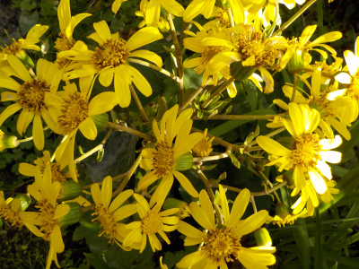
黄色が多くなるけどゴチャゴチャしますね。
ほどほどが丁度いいです。
2018/10/27
花数が多いので咲いたら綺麗だろなと思ったんですが、咲いてみると普通かな。

黄色が多くなるけどゴチャゴチャしますね。
ほどほどが丁度いいです。
2018/10/27
1年分のハーブティーはすでに収穫済なので、もういらない。
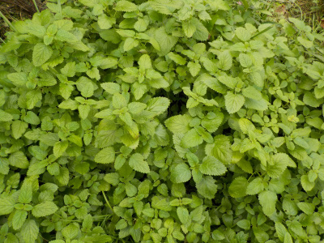
なんかもったいないけど、場所を取ってるのでバッサリ切りました。
2018/10/27
赤くなってたのでちょっと食べました。
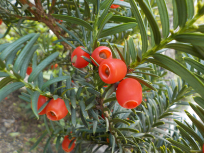
甘くて美味しい。
実がもっと大きいといいですね。毒がないといいですね。
2018/10/27
今年は夏にトマトの収穫が少なかったですが、そのせいか今でもちょっと収穫できました。
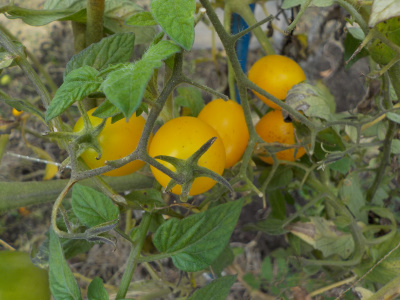
まだ実は残っていますが、もう寒くて熟れないかな。
2018/10/27
例年どうりの収穫です。
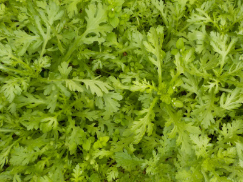
定番野菜ですね。
2018/10/14
少し大きくなったので、葉っぱを少し収穫しました。
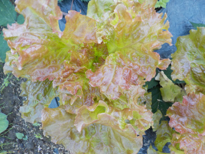
新しい葉っぱは癖が少なそうで美味しそうです。
今日は収穫が少しでした。もうちょっと欲しかったかな。
あんまり株を増やすと春に食べきれなくなるので、少ないくらいがちょうどいいかな。
2018/10/14
少し寒くなりましたが、まだ大きい芋虫がいるんですね。
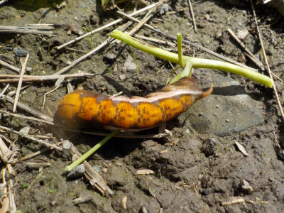
なんなく元気がなさそうだなーと思ったので放置したんですが、ちょっと目を離していたらいなくなってました。
意外と元気だったようです。
畑の野菜が沢山食べられちゃうかな。逃がして失敗したかも。
2018/10/07
今日は風向きが良かったみたいで、とってもよく匂っていました。
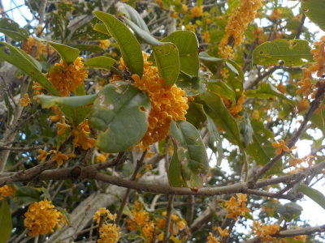
四方にあったら、開花時は毎日いい匂いがするんだろうな。
増やそうかな。
6月に挿し木かな。
2018/10/07
細葉柊南天にスズメバチが沢山集まっていました。
スズメバチはこの花が大好きみたい。
でも危ないので蜂用殺虫剤を噴射して追い払いました。
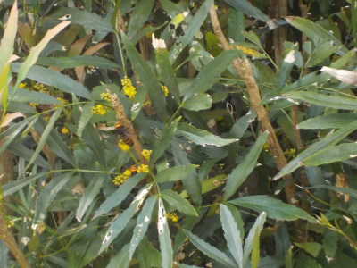
１週間蜂の巣が出来ないタイプの薬剤でしたが、花の匂いが勝ったようで、しばらくしたらまたスズメバチが寄ってきていました。
この花の匂いって凄いですね。殺虫剤に勝つとは思いませんでした。
2018/10/07
綺麗に咲いてるんだけど、名前がわかりません。
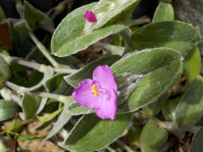
ネットで調べたけど、沢山の画像から探すのが面倒で探しきれませんでした。
2018/10/07
もう秋ですね。
ツワブキの蕾が沢山出来てます。
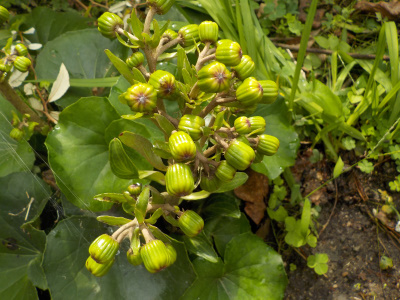
きっともうすぐ咲きますね。
蕾が密集してるので、見ごたえがありそうです。
花が咲くのはいいけど、これから寒くなると思うとちょっと憂鬱だな。
過去の日記
畑仕事じゃないよ。